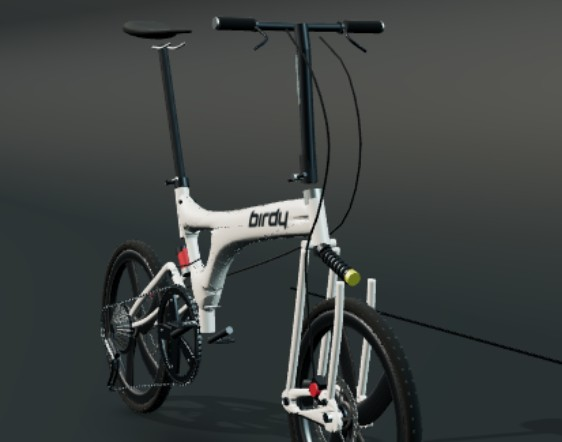

帥V 私人車庫 / THE ATELIER
BIRDY 3單車鑑賞室。
從完整輪廓，到細微光影。
你的 BIRDY，值得慢慢看。

01 / 3 / CARBON STUDY
靜態展台 · 可旋轉的 3D 展廳在正式站
LIGHT
FOCUS / 01
全車輪廓
前後避震、一體車架與五刀碳輪，在棚燈下的完整比例。
BIRDY 3 / 五刀碳輪
畫面取自正式站 3D 展廳截圖；本預覽為靜態頁，控制項僅示意。實際零件與配備請看車庫。
THE ATELIER / 01現役車隊 11
同步於 2026-11-05
- 01大綠旗艦
- 02小綠
- 03大灰 EVO 53/39
- 04玫瑰鳥
- 05老布黑
- 06小粉布
- 07小沙布
- 08小帥哥
- 09Classic
- 10小白小跑車
- 11小黑玩車 可轉手
回到你的工作台
車輛資料、零件配置與騎乘計算。